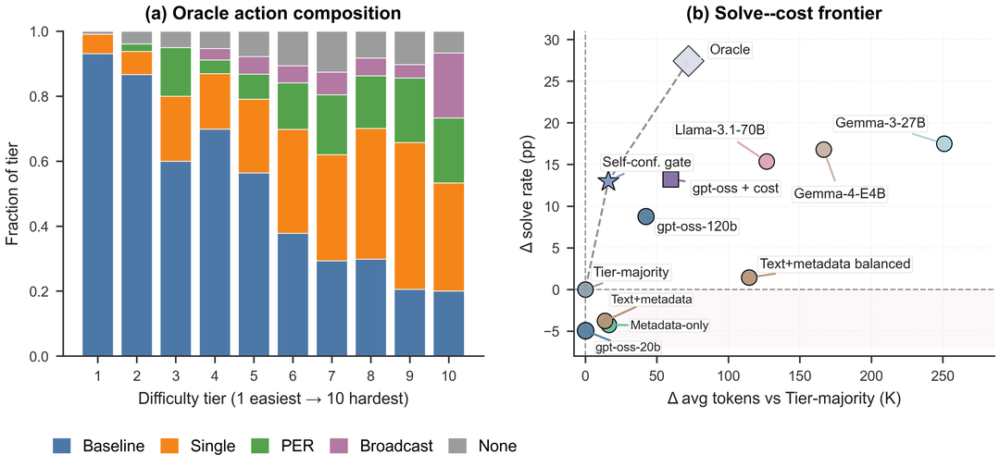

View full-size figure ↗When is collaboration worth its cost?
We run every problem under four protocols—direct solving, self-correction, planner–executor–reviewer, and multi-agent deliberation—while holding the solver fixed within each setting. In our experiments, confidence helps identify likely failures, but choosing the collaboration protocol that will pay off remains harder. Conservative routers miss useful collaboration; higher-solve frozen routers often spend too many tokens.
Citation
Download BibTeX ↗Chih-Hsuan Yang et al. Findings of EMNLP 2026.
doi:10.18653/2026.findings-emnlp.1275
BibTeX
@inproceedings{yang-etal-2026-llms-predict,
title = "{LLM}s Can Predict Failure Risk, But Struggle to Predict Which Collaboration Protocol Pays Off: Cost-Aware Protocol Routing Across Reasoning Tasks",
author = "Yang, Chih-Hsuan and
Jiang, Jingyan and
Yang, Cheng-Hau and
Vasudevan, Vikram and
Zheng, Huihuo and
Vishwanath, Venkatram and
Thakur, Rajeev",
editor = "Lee, Hung-Yi and
Dev, Sunipa and
Li, Jessy and
Elliott, Desmond",
booktitle = "Findings of the {A}ssociation for {C}omputational {L}inguistics: {EMNLP} 2026",
month = oct,
year = "2026",
address = "Budapest, Hungary",
publisher = "Association for Computational Linguistics",
url = "https://aclanthology.org/2026.findings-emnlp.1275/",
doi = "10.18653/2026.findings-emnlp.1275",
pages = "26995--27016",
ISBN = "979-8-89176-462-0"
}